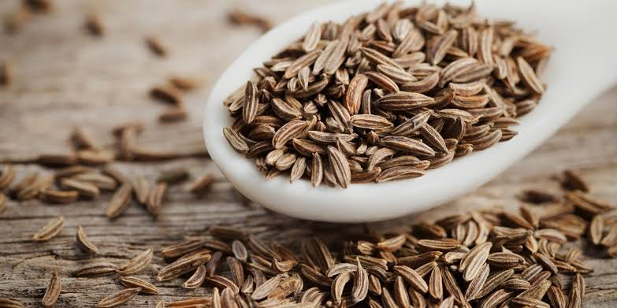

Cumin
−
1
+
Cumin seeds – Rs.165/kg
Support our locals who are working on the agricultural fields throughout day and night to protect our natural foods and herbs. Buy now.
Product Description
Testimonials
Cumin is the dried seed of the herb Cuminum cyminum, a member of the parsley family. The cumin plant grows to 30–50cm (12–20in) tall and is harvested by hand. In India, the seeds are powdered and used in different forms like kashaya (decoction), arishta (fermented decoction), and vati (tablet/pills), and processed with ghee (a semifluid clarified butter). In traditional medicine practices of several countries, dried cumin seeds are believed to have medicinal purposes, although there is no scientific evidence for any use as a drug or medicine. In southern Indian states, a popular drink called jira water is made by boiling cumin seeds.
Cumin Powder
Jeera is known for its various health benefits. From boosting digestion and staying hydrated to treating anaemia naturally and weight loss, jeera water has numerous benefits. As I had to shift from my hometown to the national capital, sudden climatic and water change didn’t suit my body. I had to deal with severe stomach pain and indigestion issues. On my mother’s advice, I started drinking jeera water and I experienced amazing benefits. I experienced the difference on the very first day. I felt fuller for a longer duration and hydrated too. As I had read that cumin seeds boost your metabolism and improve digestion, I experienced the same. I could enjoy my food and was feeling more energetic. I stayed active all day long. I also experienced one weird change. I had to pee a lot of times during the day! For the first two days, it was quite difficult for me but from the third day, I started getting used to it. On consulting a doctor, I realized that drinking cumin water helps you flush out toxins from your body and therefore, I was peeing more frequently than before. As my body got used to jeera water, my peeing frequency also got back normal. Cumin water is a healthy way to lose weight. It helps in regulating blood sugar levels, lowers LDL cholesterol levels and is a great way to get a healthy and clear skin. For controlling obesity and to get a flat belly, you must try this wonder drink.
Source: Click here